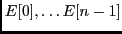

Votre programme et sa classe doivent porter votre nom (et prénom en cas d'homonymie). Appelez l'encadrant chaque fois que vous avez terminé une question.
Un tableau non trié d'entiers naturels
 est donné.
Il est généré par la méthode exemple.
Le problème est de calculer la longueur de la séquence croissante (au sens large) la plus longue.
Dans cette séquence, tout élément (sauf le dernier)
est inférieur ou égal à son élément suivant.
Par exemple, ci dessous, pour